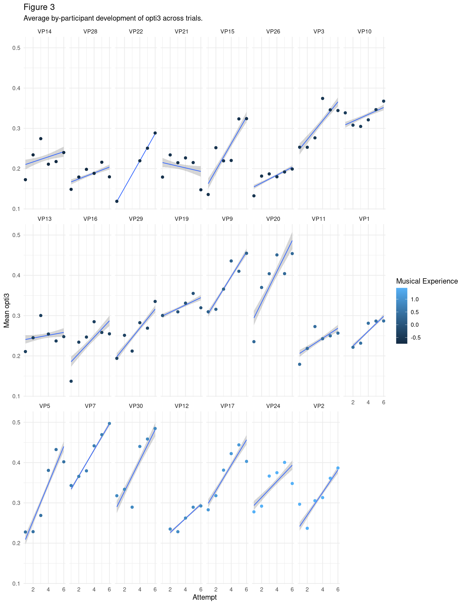
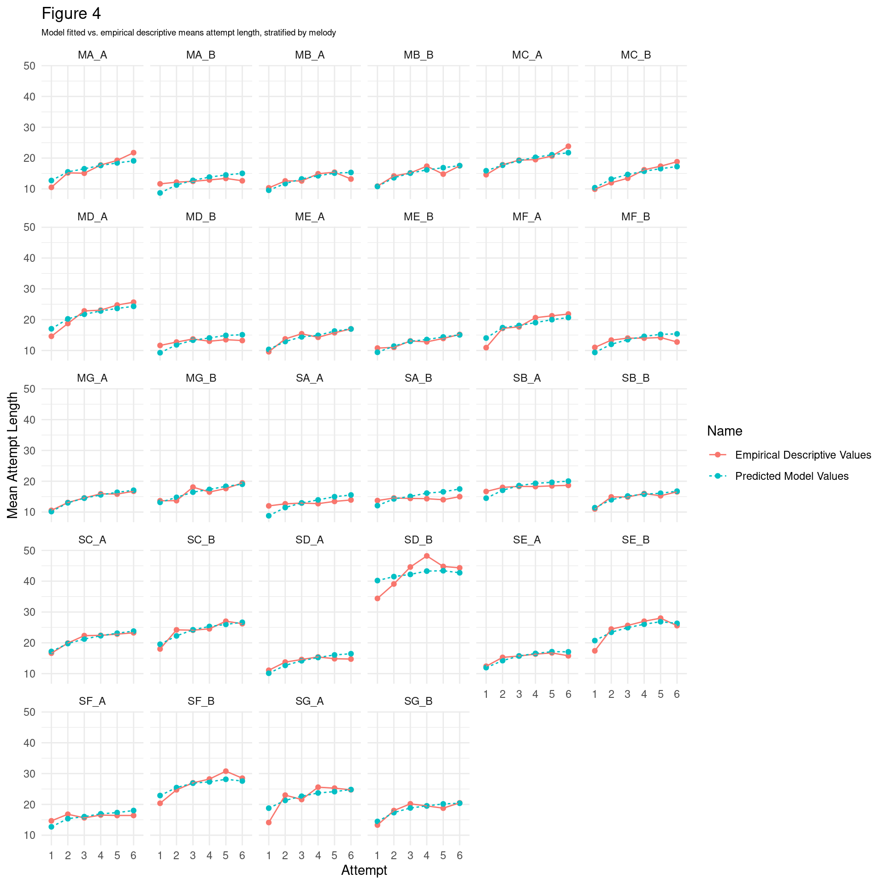

Silas & Müllensiefen (2023) online supplement
silas_and_mullensiefen_2023_online_supplement.RmdN.B. This page is currently a WIP.
data_summary <- function(data, varname, groupnames){
library(plyr)
summary_func <- function(x, col){
c(mean = mean(x[[col]], na.rm=TRUE),
sd = sd(x[[col]], na.rm=TRUE),
se = sd(x[[col]], na.rm=TRUE)/sqrt(length(x[[col]]))
)
}
data_sum<-ddply(data, groupnames, .fun=summary_func,
varname)
data_sum <- rename(data_sum, c("mean" = varname))
return(data_sum)
}
coef_variation <- function(v) {
sd(v, na.rm = TRUE)/mean(v, na.rm = TRUE)
}
plot_descriptive_vs_predicted_participant <- function(model, pretty_var_name, var_name) {
var_name <- as.name(var_name)
prds <- tibble(pred = predict(model, na.action = na.exclude),
attempt = musicassessrdocs::melodic_recall_paper_2023_main$attempt_numeric,
p_id = musicassessrdocs::melodic_recall_paper_2023_main$p_id)
prds <- prds %>%
dplyr::group_by(attempt, p_id) %>%
dplyr::summarise(pred = mean(pred, na.rm = TRUE)) %>%
ungroup()
mean_by_attempt <- musicassessrdocs::melodic_recall_paper_2023_main %>%
dplyr::group_by(attempt, p_id) %>%
dplyr::summarise(
!!var_name := mean(!!var_name, na.rm = TRUE)
) %>%
ungroup()
attempt_pred_vs_descript <- cbind(mean_by_attempt,
prds %>% dplyr::select(-c(attempt, p_id))) %>%
dplyr::rename(Attempt = attempt,
`Predicted Model Values` = pred,
`Empirical Descriptive Values` = !! var_name) %>%
pivot_longer(`Empirical Descriptive Values`:`Predicted Model Values`, names_to = "Name", values_to = pretty_var_name)
ggplot(attempt_pred_vs_descript, aes(x = Attempt, y = !! as.name(pretty_var_name), group = Name, color = Name, linetype = Name)) +
geom_point() +
geom_line() +
theme(legend.title=element_blank()) +
facet_wrap(~p_id)
}
plot_descriptive_vs_predicted <- function(model, pretty_var_name, var_name) {
var_name <- as.name(var_name)
prds <- tibble(pred = predict(model, na.action = na.exclude),
attempt = musicassessrdocs::melodic_recall_paper_2023_main$attempt)
prds <- prds %>%
dplyr::group_by(attempt) %>%
dplyr::summarise(pred = mean(pred, na.rm = TRUE)) %>%
ungroup()
mean_by_attempt <- musicassessrdocs::melodic_recall_paper_2023_main %>%
dplyr::group_by(attempt) %>%
dplyr::summarise(
!!var_name := mean(!!var_name, na.rm = TRUE)
) %>%
ungroup()
attempt_pred_vs_descript <- cbind(mean_by_attempt,
prds %>% dplyr::select(-attempt)) %>%
dplyr::rename(Attempt = attempt,
`Predicted Model Values` = pred,
`Empirical Descriptive Values` = !! var_name) %>%
pivot_longer(`Empirical Descriptive Values`:`Predicted Model Values`, names_to = "Name", values_to = pretty_var_name)
ggplot(attempt_pred_vs_descript, aes(x = Attempt, y = !! as.name(pretty_var_name), group = Name, color = Name, linetype = Name)) +
geom_point() +
geom_line() +
theme(legend.title=element_blank())
}
plot_descriptive_vs_predicted_melody <- function(model, pretty_var_name, var_name) {
var_name <- as.name(var_name)
prds <- tibble(pred = predict(model, na.action = na.exclude),
attempt = musicassessrdocs::melodic_recall_paper_2023_main$attempt_numeric,
unique_melody_name = musicassessrdocs::melodic_recall_paper_2023_main$unique_melody_name)
prds <- prds %>%
dplyr::group_by(attempt, unique_melody_name) %>%
dplyr::summarise(pred = mean(pred, na.rm = TRUE)) %>%
ungroup()
mean_by_attempt <- musicassessrdocs::melodic_recall_paper_2023_main %>%
dplyr::group_by(attempt, unique_melody_name) %>%
dplyr::summarise(
!!var_name := mean(!!var_name, na.rm = TRUE)
) %>%
ungroup()
attempt_pred_vs_descript <- cbind(mean_by_attempt,
prds %>% dplyr::select(-c(attempt, unique_melody_name))) %>%
dplyr::rename(Attempt = attempt,
`Predicted Model Values` = pred,
`Empirical Descriptive Values` = !! var_name) %>%
pivot_longer(`Empirical Descriptive Values`:`Predicted Model Values`, names_to = "Name", values_to = pretty_var_name)
ggplot(attempt_pred_vs_descript, aes(x = Attempt, y = !! as.name(pretty_var_name), group = Name, color = Name, linetype = Name)) +
geom_point() +
geom_line() +
theme(legend.title=element_blank()) +
facet_wrap(~unique_melody_name)
}The following are supplementary materials for:
Silas, S., & Müllensiefen, D. (2023). Learning and recalling melodies: A computational investigation using the melodic recall paradigm. Music Perception.
Short melodic excerpts from pop songs used as materials in the study
stim_table <- musicassessrdocs::get_asset('melodic_recall_paper_2023/stimuli.xlsx') %>%
readxl::read_excel() %>%
dplyr::select(`Nr.`, DATEINAME, `KOMP./ INTERPRET`, GENRE, TEMPO) %>%
dplyr::rename(Song = DATEINAME, `Composer/Interpreter` = `KOMP./ INTERPRET`, `Genre/Meter` = GENRE, Tempo = TEMPO) %>%
dplyr::mutate(Song = tools::file_path_sans_ext(Song)) %>%
dplyr::filter(!is.na(Song)) %>%
dplyr::mutate(Song = case_when(Song == "Do You Want To Dance. mid" ~ "Do You Want To Dance?", TRUE ~ Song)) %>%
dplyr::filter(`Nr.` %in% c(1, 4, 11, 25, 30, 31, 36, 2, 6, 7, 9, 26, 32, 35)) %>%
dplyr::select(-`Nr.`) %>%
dplyr::mutate(`No.` = row_number()) %>%
dplyr::relocate(`No.`) %>%
dplyr::mutate(`Composer/Interpreter` = stringr::str_remove(`Composer/Interpreter`, "u.a. "))
knitr::kable(stim_table)| No. | Song | Composer/Interpreter | Genre/Meter | Tempo |
|---|---|---|---|---|
| 1 | Children Of The Night | R. Marx | Pop 4/4 | 75 |
| 2 | Climb Up | N. Sedaka | R´n´R 4/4 | 120 |
| 3 | Cold Cold Heart | M. Pellow | Pop 4/4 | 80 |
| 4 | Do You Want To Dance? | R. Freeman | R´n´R 4/4 | 100 |
| 5 | Du gehörst zu mir | J. Heider | Schlager 4/4 | 120 |
| 6 | Longer | D. Fogelberg | Pop-Ballade 4/4 | 80 |
| 7 | Oh Carol | N. Sedaka | Pop-Ballade 4/4 | 140 |
| 8 | Take Good Care | C. King | Ballade 4/4 | 120 |
| 9 | The Sky Is Crying | M. Levy | Blues 12/8 | 60 |
| 10 | You Are My Destiny | P. Anka | Schlager 12/8 | 85 |
| 11 | Goodbye My Love Goodbye | M. Panas / D. Roussos | Schlager 4/4 | 114 |
| 12 | Enjoy Your Life | Funky Be | HipHop 4/4 | 85 |
| 13 | Love Is Like A Rainbow | T. Anders | Disco-Pop 4/4 | 155 |
| 14 | Let Me Be Your Only One | Funky Be | HipHop 4/4 | 100 |
Appendix D1
An example of one melody from each pop song.
# Create stimuli images
mid_files <- musicassessrdocs::get_asset('melodic_recall_paper_2023/melausschnitte_midi') %>%
list.files(pattern = '\\.mid$', full.names = TRUE, ignore.case = TRUE)
purrr::walk(mid_files, ~midi2img::midi2img(f = .x))Melody No. 1: Children of the Night, R.Marx
knitr::include_graphics('1melchil-1.png')


Melody No. 11: Goodbye My Love Goodbye, M. Panas / D. Roussos
knitr::include_graphics('4melgoodbye-1.png')


Description and distribution of melodic features
musicassessrdocs::melodic_recall_paper_2023_melodies_with_features %>%
itembankr::hist_item_bank() +
theme_minimal()## `stat_bin()` using `bins = 30`. Pick better value with `binwidth`.
musicassessrdocs::melodic_recall_paper_2023_melodies_with_features %>%
dplyr::select(N, i.entropy, tonalness, step.cont.loc.var, d.entropy, mean_int_size, pitch_variety, int_variety, mean_information_content) %>%
dplyr::rename(mean.int.size = mean_int_size, pitch.variety = pitch_variety, int.variety = int_variety, mean.information.content = mean_information_content) %>%
dplyr::summarise(across(everything(), .fns = list(mean = mean, sd = sd, coef.variation = coef_variation)),
.groups = 'rowwise') %>%
dplyr::mutate(across(everything(), round, 2)) %>%
pivot_longer(everything(), names_sep = "_", names_to = c("feature", "summary_var")) %>%
pivot_wider(names_from = summary_var) %>%
dplyr::rename(Feature = feature,
Mean = mean,
SD = sd,
`Coefficient of Variation` = coef.variation) %>%
arrange(desc(`Coefficient of Variation`)) %>%
knitr::kable(caption = "Melodic feature summary statistics. Note, some are not used in our modelling, but are here to show other properties of the melodies.")## Warning: There was 1 warning in `dplyr::mutate()`.
## ℹ In argument: `across(everything(), round, 2)`.
## ℹ In row 1.
## Caused by warning:
## ! The `...` argument of `across()` is deprecated as of dplyr 1.1.0.
## Supply arguments directly to `.fns` through an anonymous function instead.
##
## # Previously
## across(a:b, mean, na.rm = TRUE)
##
## # Now
## across(a:b, \(x) mean(x, na.rm = TRUE))| Feature | Mean | SD | Coefficient of Variation |
|---|---|---|---|
| d.entropy | 0.36 | 0.19 | 0.53 |
| step.cont.loc.var | 0.86 | 0.38 | 0.44 |
| pitch.variety | 0.28 | 0.11 | 0.40 |
| mean.int.size | 2.21 | 0.84 | 0.38 |
| int.variety | 0.37 | 0.13 | 0.37 |
| N | 25.39 | 8.66 | 0.34 |
| mean.information.content | 4.07 | 0.89 | 0.22 |
| tonalness | 0.69 | 0.14 | 0.20 |
| i.entropy | 0.36 | 0.06 | 0.18 |
Questionnaire items.
tibble::tibble(
Variable = c("chorusin", "singinstr:", "yearsins", "musmakpa", "paidless", "paidgigs", "gigs"),
Question = c(
"Do you sing in a choir?",
"Have you ever received singing instructions?",
"For how many years have you been playing an instrument or making music?",
"During your most active musical phase how many hours per week did you make music (practice+rehearsal+gigs+lessons+playing+etc.)",
"For how many months have you received paid instrumental or singing lessons?",
"How many gigs have you played that you have been paid for?",
"Overall, how many gigs have you played in front of an audience in your life?"
),
`Response Format` = c("Yes/No", "Yes/No", "__years", "__hours/week", " __ months", "___gigs", "___gigs")
) %>% knitr::kable()| Variable | Question | Response Format |
|---|---|---|
| chorusin | Do you sing in a choir? | Yes/No |
| singinstr: | Have you ever received singing instructions? | Yes/No |
| yearsins | For how many years have you been playing an instrument or making music? | __years |
| musmakpa | During your most active musical phase how many hours per week did you make music (practice+rehearsal+gigs+lessons+playing+etc.) | __hours/week |
| paidless | For how many months have you received paid instrumental or singing lessons? | __ months |
| paidgigs | How many gigs have you played that you have been paid for? | ___gigs |
| gigs | Overall, how many gigs have you played in front of an audience in your life? | ___gigs |
Factor loadings for mixed type variables based on questionnaire items
fl <- lavaan::inspect(musicassessrdocs::melodic_recall_paper_2023_fit1, what="std")$lambda %>%
as.data.frame() %>%
tibble::rownames_to_column(var = "Variable") %>%
dplyr::rename(Loading = f1) %>%
dplyr::mutate(Loading = round(Loading, 2),
h2 = round(Loading^2, 2),
u2 = 1-h2)
fl %>% knitr::kable()| Variable | Loading | h2 | u2 |
|---|---|---|---|
| chorusin | 0.70 | 0.49 | 0.51 |
| singinstr | 0.46 | 0.21 | 0.79 |
| yearsins | 0.82 | 0.67 | 0.33 |
| musmakpa | 0.77 | 0.59 | 0.41 |
| paidless | 0.65 | 0.42 | 0.58 |
| paidgigs | 0.66 | 0.44 | 0.56 |
| gigs | 0.69 | 0.48 | 0.52 |
Appendix H1
Average by-participant across trials
Another way of visualising differences in performance is at the level of participant, coloured and ordered by level of musical experience. This is useful since it invokes no false dichotimisations and preserves the actual unit of participant (however, note that participant-level effects are captured by our mixed effects models).
Average by-participant development of attempt length
plot_descriptive_vs_predicted_participant(
model = musicassessrdocs::lm.B1.2,
pretty_var_name = "Mean Attempt Lengh",
var_name = 'attempt_length') +
labs(title = "Figure 13",
subtitle = "Model fitted vs. empirical descriptive means of attempt length, stratified by participant.") +
theme(plot.subtitle=element_text(size=7))## Loading required package: lmerTest##
## Attaching package: 'lmerTest'## The following object is masked from 'package:lme4':
##
## lmer## The following object is masked from 'package:stats':
##
## step## `summarise()` has grouped output by 'attempt'. You can override using the
## `.groups` argument.
## `summarise()` has grouped output by 'attempt'. You can override using the
## `.groups` argument.
Average by-participant development of opti3 across trials
As shown in the figure, participants seem to have vastly different slopes. The bottom right, lighter blue, higher musical experience participants (e.g., VP5, VP7, VP30, VP12, VP17, VP24, VP2) seem to have steeper slopes than the lower musical experience participants in the top left, darker coloured (VP14, VP28, VP21), suggesting that higher musical experience is related to quicker learning. However, note that this pattern is not the same for everyone e.g., VP22 has a steep slope, but scores low on musical experience
vp_summary <- musicassessrdocs::melodic_recall_paper_2023_main %>%
dplyr::rename(`Musical Experience` = musical_experience) %>%
dplyr::group_by(p_id, attempt) %>%
dplyr::summarise(mean_opti3 = mean(opti3),
mean_harmcore = mean(harmcore),
mean_rhythfuzz = mean(rhythfuzz),
mean_ngrukkon = mean(ngrukkon),
`Musical Experience` = `Musical Experience`)## `summarise()` has grouped output by 'p_id', 'attempt'. You can override using
## the `.groups` argument.
vp_summary %>%
ggplot(aes(x = as.numeric(attempt), y = as.numeric(mean_opti3))) +
geom_smooth(method = "lm", size = .5) +
geom_point(aes(color = `Musical Experience`)) +
facet_wrap(~reorder(p_id, `Musical Experience`), nrow = 3) +
labs(x = "Attempt",
y = "Mean opti3",
title = "Figure 12",
subtitle = "Average by-participant development of opti3 across trials."
)## `geom_smooth()` using formula = 'y ~ x'
plot_descriptive_vs_predicted_participant(
model = musicassessrdocs::lm.A1.2,
pretty_var_name = "Mean opti3",
var_name = 'opti3') +
labs(title = "Figure 14",
subtitle = "Model fitted vs. empirical descriptive means of opti3, stratified by participant.") +
theme(plot.subtitle=element_text(size=7))## `summarise()` has grouped output by 'attempt'. You can override using the
## `.groups` argument.
## `summarise()` has grouped output by 'attempt'. You can override using the
## `.groups` argument.
Appendix H2
Average by-melody development of no. of note events across trials
by_mel <- musicassessrdocs::melodic_recall_paper_2023_main %>%
dplyr::group_by(unique_melody_name) %>%
dplyr::summarise(
attempt_length = mean(attempt_length, na.rm = TRUE),
opti3 = mean(opti3, na.rm = TRUE),
N = N,
) %>%
ungroup() %>%
arrange(desc(opti3)) %>%
mutate(opti3 = round(opti3, 2)) %>%
unique()## `summarise()` has grouped output by 'unique_melody_name'. You can override
## using the `.groups` argument.
by_mel_and_attempt <- musicassessrdocs::melodic_recall_paper_2023_main %>%
dplyr::group_by(attempt, unique_melody_name) %>%
dplyr::summarise(
attempt_length = mean(attempt_length, na.rm = TRUE),
opti3 = mean(opti3, na.rm = TRUE)
) %>%
ungroup()## `summarise()` has grouped output by 'attempt'. You can override using the
## `.groups` argument.Melody SA_B appears to be the easiest melody to recall (mean opti3 across all trials = 0.61), whereas MF_B appears most difficult to recall (mean opti3 across all trials = 0.11). This shows that there can be substantial variation in the difficulty of each melody.
plot_descriptive_vs_predicted_melody(
model = musicassessrdocs::lm.B1.2,
pretty_var_name = "Mean Attempt Length",
var_name = 'attempt_length') +
labs(title = "Figure 13",
subtitle = "Model fitted vs. empirical descriptive means attempt length, stratified by melody") +
theme(plot.subtitle=element_text(size=7))## `summarise()` has grouped output by 'attempt'. You can override using the
## `.groups` argument.
## `summarise()` has grouped output by 'attempt'. You can override using the
## `.groups` argument.
plot_descriptive_vs_predicted_melody(
model = musicassessrdocs::lm.A1.2,
pretty_var_name = "Mean Opti3",
var_name = 'opti3') +
labs(title = "Figure 13",
subtitle = "Model fitted vs. empirical descriptive means of opti3, stratified by melody") +
theme(plot.subtitle=element_text(size=7))## `summarise()` has grouped output by 'attempt'. You can override using the
## `.groups` argument.
## `summarise()` has grouped output by 'attempt'. You can override using the
## `.groups` argument.
Appendix I Linear vs. Non-Linear Models attempt length and opti3
We proceed by using the log attempt as numeric predictor, owing to the observed non-linearities in both opti3 and attempt length across attempt. A comparison of linear vs non-linear models is shown below.
Appendix I1: Linear model of attempt length across repeated attempts
appen_g1 <- lmerTest::lmer(attempt_length ~ attempt + (1|unique_melody_name) + (1|p_id) + (1|p_id:unique_melody_name),
data = musicassessrdocs::melodic_recall_paper_2023_main)
appen_g1 |>
apa_print() |>
apa_table() | Term | \(\hat{\beta}\) | 95% CI | \(t\) | \(\mathit{df}\) | \(p\) |
|---|---|---|---|---|---|
| Intercept | 13.72 | [11.12, 16.32] | 10.34 | 38.29 | < .001 |
| Attempt2 | 3.26 | [2.59, 3.92] | 9.63 | 1449.39 | < .001 |
| Attempt3 | 4.54 | [3.88, 5.20] | 13.45 | 1452.67 | < .001 |
| Attempt4 | 5.58 | [4.91, 6.25] | 16.30 | 1457.44 | < .001 |
| Attempt5 | 6.10 | [5.43, 6.78] | 17.62 | 1458.23 | < .001 |
| Attempt6 | 6.74 | [6.04, 7.43] | 19.01 | 1458.66 | < .001 |
Figure 12 shows that the use of the log attempt as predictor is justified, capturing the systematic non-linear pattern generally well.
lmA1.p <- plot_descriptive_vs_predicted(model = musicassessrdocs::lm.A1.2,
pretty_var_name = "Mean Attempt Length",
var_name = 'attempt_length') +
labs(caption = "Note: Dashed line represents changes in model-fitted values, solid line changes in empirical descriptive mean values.") +
theme(legend.position = 'none')
lmB1.p <- plot_descriptive_vs_predicted(model = musicassessrdocs::lm.B1.2,
pretty_var_name = "Mean opti3",
var_name = "opti3") +
labs(
title = "Figure 12",
x = "",
subtitle = "Model fitted vs. empirical descriptive means of attempt length and opti3, by attempt.") +
theme(legend.position = 'top',
plot.caption=element_text(size=7),
plot.subtitle=element_text(size=10))
gridExtra::grid.arrange(lmA1.p, lmB1.p)Appendix I2: Linear model of mean similarity scores (opti3) across repeated attempts
appen_g2 <- lmerTest::lmer(opti3 ~ attempt + (1|unique_melody_name) + (1|p_id) + (1|p_id:unique_melody_name), data = musicassessrdocs::melodic_recall_paper_2023_main)
appen_g2 |>
apa_print() |>
apa_table() | Term | \(\hat{\beta}\) | 95% CI | \(t\) | \(\mathit{df}\) | \(p\) |
|---|---|---|---|---|---|
| Intercept | 0.22 | [0.17, 0.27] | 7.96 | 44.96 | < .001 |
| Attempt2 | 0.05 | [0.03, 0.06] | 5.02 | 1441.05 | < .001 |
| Attempt3 | 0.07 | [0.05, 0.09] | 7.36 | 1444.00 | < .001 |
| Attempt4 | 0.10 | [0.08, 0.12] | 10.58 | 1448.03 | < .001 |
| Attempt5 | 0.12 | [0.10, 0.14] | 12.47 | 1448.89 | < .001 |
| Attempt6 | 0.13 | [0.11, 0.15] | 13.23 | 1449.24 | < .001 |
make_vif_table <- function(mod) {
round(car::vif(mod), 2) %>%
as.data.frame() %>%
tibble::rownames_to_column(var = "Predictor") %>%
dplyr::rename(VIF = 2)
}Appendix J
Diagnostic statistics for models with all features in (partial R-squared and variance inflation factor values)
With attempt length as dependent variable
# https://stats.stackexchange.com/questions/358927/compute-partial-eta2-for-all-fixed-effects-anovas-from-a-lme4-model
# https://cran.r-project.org/web/packages/effectsize/vignettes/from_test_statistics.html#in-linear-mixed-models
model_a_vif <- make_vif_table(musicassessrdocs::melodic_recall_paper_2023_lm.A2)
save(model_a_vif, file = 'model_a_vif.rda')
load(file = 'model_a_vif.rda')
model_a_vif %>%
papaja::apa_table(caption = "Variation inflation factor (VIF) values for model with all features in and attempt length as dependent variable")| Predictor | VIF |
|---|---|
| condition | 1.63 |
| log(attempt_numeric) | 1.00 |
| N | 4.59 |
| tonalness | 2.22 |
| i.entropy | 4.50 |
| step.cont.loc.var | 5.46 |
| d.entropy | 1.84 |
| mean_information_content | 4.58 |
r2beta(musicassessrdocs::melodic_recall_paper_2023_lm.A2, method = "nsj") %>%
papaja::apa_table("Partial R-Squared values for model with all features in and attempt length as dependent variable")| Effect | F | v1 | v2 | ncp | Rsq | upper.CL | lower.CL |
|---|---|---|---|---|---|---|---|
| Model | 188.68 | 8.00 | 1,763.00 | 1,509.42 | 0.46 | 0.49 | 0.43 |
| log(attempt_numeric) | 203.38 | 1.00 | 1,763.00 | 203.38 | 0.10 | 0.13 | 0.08 |
| N | 93.27 | 1.00 | 1,763.00 | 93.27 | 0.05 | 0.07 | 0.03 |
| conditionS | 84.95 | 1.00 | 1,763.00 | 84.95 | 0.05 | 0.07 | 0.03 |
| tonalness | 72.84 | 1.00 | 1,763.00 | 72.84 | 0.04 | 0.06 | 0.02 |
| d.entropy | 62.88 | 1.00 | 1,763.00 | 62.88 | 0.03 | 0.05 | 0.02 |
| step.cont.loc.var | 32.40 | 1.00 | 1,763.00 | 32.40 | 0.02 | 0.03 | 0.01 |
| mean_information_content | 0.57 | 1.00 | 1,763.00 | 0.57 | 0.00 | 0.00 | 0.00 |
| i.entropy | 0.02 | 1.00 | 1,763.00 | 0.02 | 0.00 | 0.00 | 0.00 |
With opti3 as dependent variable
model_b_vif <- make_vif_table(musicassessrdocs::melodic_recall_paper_2023_lm.B2)
save(model_b_vif, file = 'model_b_vif.rda')
load(file = 'model_b_vif.rda')
model_b_vif %>%
papaja::apa_table(caption = "Variation inflation factor (VIF) values for model with all features in and opti3 as dependent variable")| Predictor | VIF |
|---|---|
| condition | 1.58 |
| log(attempt_numeric) | 1.00 |
| N | 4.58 |
| tonalness | 2.19 |
| i.entropy | 4.46 |
| step.cont.loc.var | 5.45 |
| d.entropy | 1.78 |
| mean_information_content | 4.57 |
r2beta(musicassessrdocs::melodic_recall_paper_2023_lm.B2, method = "nsj") %>%
papaja::apa_table("Partial R-Squared values for model with all features in and opti3 as dependent variable")| Effect | F | v1 | v2 | ncp | Rsq | upper.CL | lower.CL |
|---|---|---|---|---|---|---|---|
| Model | 42.54 | 8.00 | 1,758.00 | 340.36 | 0.16 | 0.20 | 0.14 |
| mean_information_content | 139.38 | 1.00 | 1,758.00 | 139.38 | 0.07 | 0.10 | 0.05 |
| log(attempt_numeric) | 86.68 | 1.00 | 1,758.00 | 86.68 | 0.05 | 0.07 | 0.03 |
| i.entropy | 78.48 | 1.00 | 1,758.00 | 78.48 | 0.04 | 0.06 | 0.03 |
| conditionS | 72.03 | 1.00 | 1,758.00 | 72.03 | 0.04 | 0.06 | 0.02 |
| N | 35.68 | 1.00 | 1,758.00 | 35.68 | 0.02 | 0.03 | 0.01 |
| step.cont.loc.var | 2.26 | 1.00 | 1,758.00 | 2.26 | 0.00 | 0.01 | 0.00 |
| d.entropy | 0.44 | 1.00 | 1,758.00 | 0.44 | 0.00 | 0.00 | 0.00 |
| tonalness | 0.00 | 1.00 | 1,758.00 | 0.00 | 0.00 | 0.00 | 0.00 |
Appendix K
Counts of overall number of trials that participants utilise for multiple attempts
musicassessrdocs::melodic_recall_paper_2023_main %>%
dplyr::count(attempt, p_id) %>%
dplyr::rename(Attempt = attempt) %>%
data_summary(varname = "n", groupnames = "Attempt") %>%
ggplot(aes(x = Attempt, y = n)) +
geom_line(color = 'orange') +
geom_point(color = 'orange') +
geom_errorbar(aes(ymin=n-se, ymax=n+se), width=.2, position=position_dodge(0.05), color = "black") +
ggplot2::labs(x = "Attempt",
y = "Number of Trials",
caption = "Error bars show the standard error.")## ------------------------------------------------------------------------------## You have loaded plyr after dplyr - this is likely to cause problems.
## If you need functions from both plyr and dplyr, please load plyr first, then dplyr:
## library(plyr); library(dplyr)## ------------------------------------------------------------------------------##
## Attaching package: 'plyr'## The following object is masked from 'package:purrr':
##
## compact## The following objects are masked from 'package:dplyr':
##
## arrange, count, desc, failwith, id, mutate, rename, summarise,
## summarize## `geom_line()`: Each group consists of only one observation.
## ℹ Do you need to adjust the group aesthetic?To assess whether the change across attempts depended on musical experience, we fitted a mixed effects model with trial count as the dependent variable, participant as random effect and the following fixed effects: linear terms for attempt and musical experience; an additional quadratic term for attempt; a linear interaction term for attempt and musical experience; and a quadratic interaction interaction term for musical experience. The model is presented below.
trial_counts <- musicassessrdocs::melodic_recall_paper_2023_main %>%
dplyr::count(attempt_numeric, p_id) %>%
left_join(musicassessrdocs::melodic_recall_paper_2023_main %>%
dplyr::select(p_id, musical_experience) %>%
unique(), by = "p_id")
trial_counts_mod <- lmerTest::lmer(n ~ attempt_numeric + I(attempt_numeric^2) + musical_experience + attempt_numeric * musical_experience + I(attempt_numeric^2) * musical_experience + (1|p_id), data = trial_counts)
trial_counts_mod |>
apa_print() |>
apa_table(caption = "")| Term | \(\hat{\beta}\) | 95% CI | \(t\) | \(\mathit{df}\) | \(p\) |
|---|---|---|---|---|---|
| Intercept | 11.51 | [10.24, 12.78] | 17.75 | 131.19 | < .001 |
| Attempt numeric | 1.27 | [0.48, 2.07] | 3.13 | 111 | .002 |
| Iattempt numeric^2 | -0.21 | [-0.32, -0.10] | -3.67 | 111 | < .001 |
| Musical experience | -0.51 | [-2.32, 1.29] | -0.56 | 131.19 | .579 |
| Attempt numeric \(\times\) Musical experience | 0.40 | [-0.73, 1.54] | 0.70 | 111 | .486 |
| Iattempt numeric^2 \(\times\) Musical experience | -0.07 | [-0.23, 0.09] | -0.91 | 111 | .366 |
Appendix L
opti3
early_late_o <- musicassessrdocs::melodic_recall_paper_2023_early_vs_late_thirds_long %>%
mutate(attempt = as.numeric(attempt)) %>%
lm(opti3 ~ melody_section + log(attempt), data = .)
early_late_o |>
apa_print() |>
apa_table(caption = "")| Predictor | \(b\) | 95% CI | \(t\) | \(\mathit{df}\) | \(p\) |
|---|---|---|---|---|---|
| Intercept | 0.09 | [0.09, 0.10] | 115.14 | 133727 | < .001 |
| Melody sectionopti3 prim | 0.02 | [0.02, 0.02] | 24.11 | 133727 | < .001 |
| Melody sectionopti3 rec | 0.00 | [-0.01, 0.00] | -5.12 | 133727 | < .001 |
| Logattempt | 0.02 | [0.02, 0.02] | 36.15 | 133727 | < .001 |
ngrukkon
early_late_ng <- musicassessrdocs::melodic_recall_paper_2023_early_vs_late_thirds_long %>%
mutate(attempt = as.numeric(attempt)) %>%
lm(ngrukkon ~ melody_section_n + log(attempt), data = .)
early_late_ng |>
apa_print() |>
apa_table(caption = "")| Predictor | \(b\) | 95% CI | \(t\) | \(\mathit{df}\) | \(p\) |
|---|---|---|---|---|---|
| Intercept | 0.06 | [0.06, 0.06] | 66.75 | 133727 | < .001 |
| Melody section nngrukkon prim | 0.03 | [0.03, 0.03] | 37.07 | 133727 | < .001 |
| Melody section nngrukkon rec | 0.00 | [0.00, 0.00] | 0.00 | 133727 | .997 |
| Logattempt | 0.03 | [0.03, 0.03] | 52.09 | 133727 | < .001 |
rhythfuzz
early_late_r <- musicassessrdocs::melodic_recall_paper_2023_early_vs_late_thirds_long %>%
mutate(attempt = as.numeric(attempt)) %>%
lm(rhythfuzz ~ melody_section_r + log(attempt), data = .)
early_late_r |>
apa_print() |>
apa_table(caption = "")| Predictor | \(b\) | 95% CI | \(t\) | \(\mathit{df}\) | \(p\) |
|---|---|---|---|---|---|
| Intercept | 0.22 | [0.21, 0.22] | 391.50 | 142691 | < .001 |
| Melody section rrhythfuzz prim | 0.00 | [0.00, 0.00] | -5.17 | 142691 | < .001 |
| Melody section rrhythfuzz rec | -0.01 | [-0.01, -0.01] | -13.43 | 142691 | < .001 |
| Logattempt | 0.03 | [0.03, 0.03] | 83.45 | 142691 | < .001 |
harmcore
early_late_hm <- musicassessrdocs::melodic_recall_paper_2023_early_vs_late_thirds_long %>%
mutate(attempt = as.numeric(attempt)) %>%
lm(harmcore ~ melody_section_h + log(attempt), data = .)
early_late_hm |>
apa_print() |>
apa_table(caption = "")| Predictor | \(b\) | 95% CI | \(t\) | \(\mathit{df}\) | \(p\) |
|---|---|---|---|---|---|
| Intercept | 0.36 | [0.35, 0.36] | 134.19 | 142691 | < .001 |
| Melody section hharmcore prim | 0.03 | [0.02, 0.03] | 11.24 | 142691 | < .001 |
| Melody section hharmcore rec | 0.00 | [0.00, 0.01] | 0.13 | 142691 | .899 |
| Logattempt | 0.02 | [0.01, 0.02] | 9.54 | 142691 | < .001 |